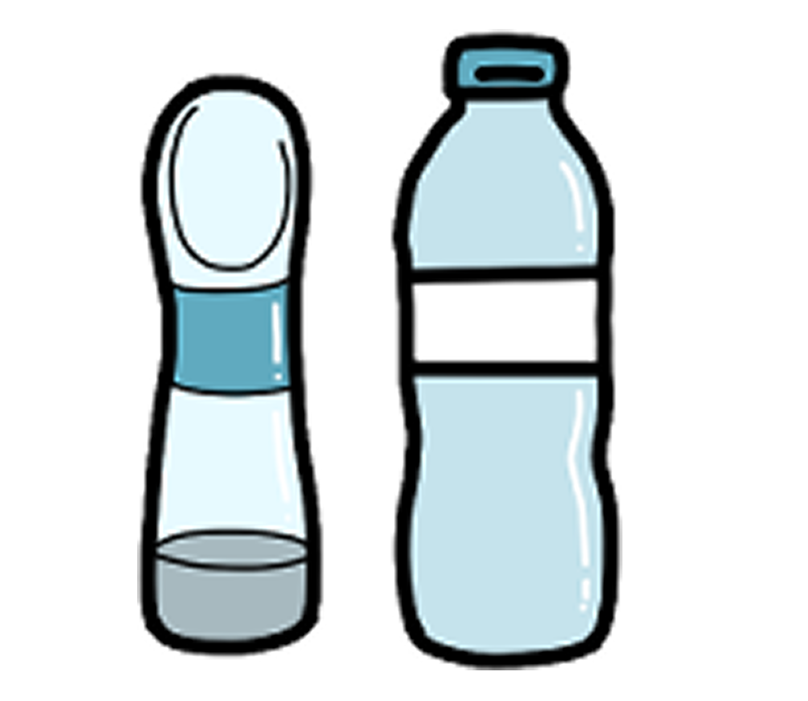

함께 준비해요!
리드 줄
목줄이나 가슴줄은 반려견의 안전을 위해서 반드시 필요한 물품입니다. 공공장소에 외출할 때 목줄을 착용시키는 것은 가장 기본적인 에티켓의 시작입니다.
인식표
혹여나 반려견과 산책 중 반려견을 잃어버렸을 경우에 인식표에 있는 반려견의 이름과 주인의 전화번호가 적힌 인식표를 통해 반려견을 찾을 수 있기 때문에 인식표는 필수입니다.
물병
산책을 할 때는 반려견이 목이 마른 상황이 생기니 항상 반려견을 먹일 물을 들고 다니도록 합니다.
배변봉투
산책 시에 반려견의 배변을 치우는 것은 기본적인 의무입니다. 배변처리용 비닐을 항상 준비해서 반려견이 배변을 볼 시에 즉각 처리하도록 합니다.
물티슈
물티슈는 반려견의 배변을 치우고 난 후에, 강아지가 심하게 더러워졌을 때 등 무언가를 닦아야 하는 일이 생겼을 때 유용하게 사용할 수 있습니다.